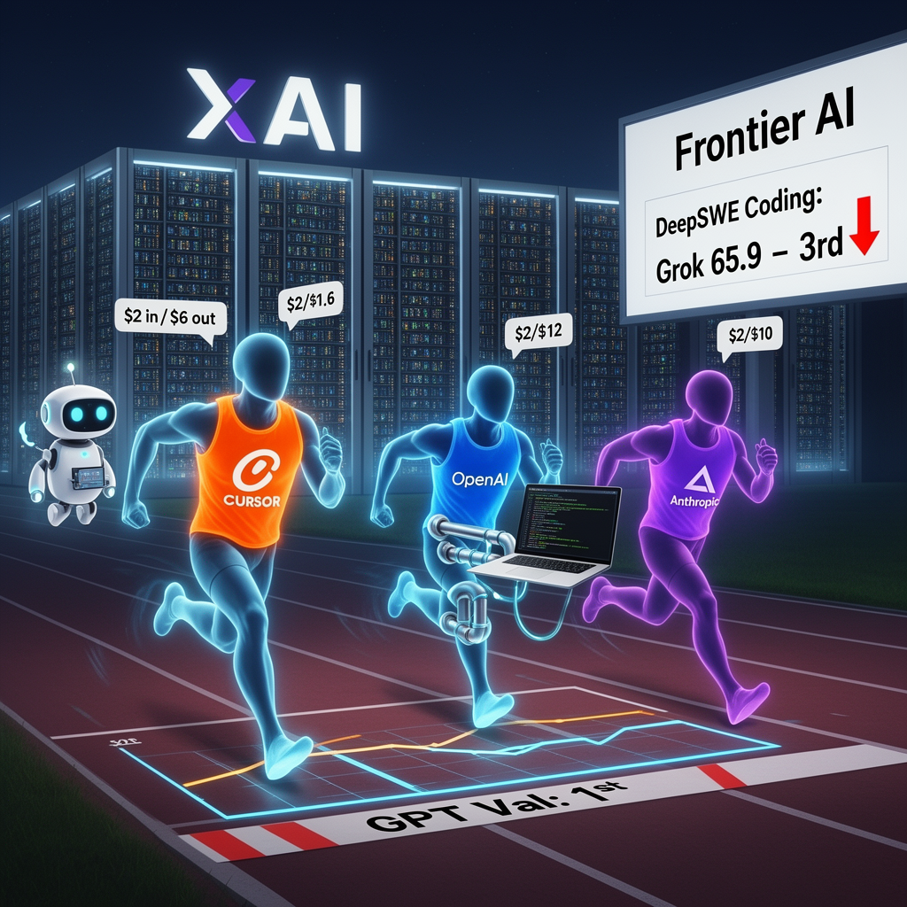

AI Panorama · fly through the DeepSeek V4 Pro edition
This page was written entirely by DeepSeek V4 Pro (DeepSeek), as one of the magazine's editions - eight AI models each wrote their own version of every story from the same frozen sources.
The same story in other editions: GPT-5.6 Terra Claude Sonnet 5 Gemini 3.7 Flash Grok 4.6 GLM 5.3 Qwen 3.8 Max Kimi K2.6
xAI released Grok 4.6, a model that challenges OpenAI and Anthropic on several benchmarks and powers a new always-on agent product.

On 13 August 2026, xAI released Grok 4.6, an update to the model it launched earlier as Grok 4.5. For the first time, reviewers described a Grok model as genuinely competitive with the leading systems from OpenAI and Anthropic — and for the past two years, that top shelf has mostly been a two-lab race.
## What changed
Grok 4.6 is not a model built from scratch. According to Wes Roth, it shares a 1.5 trillion parameter base model with Grok 4.5. A parameter is one of the adjustable weights inside a neural network; more parameters generally mean a larger, more expensive model, though size alone does not decide quality. The main difference this time was a much longer supplemental training run. The company said it used curated model-generated data for reasoning and advanced technical concepts, high-quality engineering data, and an improved training recipe. Much of that data came from Cursor, the coding company xAI acquired.
## Where it sits — and where the sources disagree
The three sources do not fully agree on exactly how good Grok 4.6 is. On an OpenAI benchmark for knowledge work — the transcripts call it GPT Val or GDP Val — Grok 4.6 High scored first, ahead of Anthropic's Fable 5 Max and OpenAI's 5.6 Soul. On Cursor Bench, it was roughly equivalent to Fable 5 Max. But on DeepSWE, a coding benchmark several commentators consider the most faithful to real work, it placed third: 65.9, behind GPT 5.6 Soul Max at 73 and Fable 5 at 70.
Wes Roth calls Grok 4.6 'neck to neck' with the best models. Matthew Berman says it is excellent but not the best at coding on DeepSWE. Bijan Bowen says it is not quite Fable 5 or 5.6 level in coding yet, but the jump from 4.5 to 4.6 is significant. All three agree xAI is now close enough to be treated as a serious third competitor.
## Price and speed
Grok 4.6 costs $2 per million input tokens and $6 per million output tokens, with a fast variant at twice the price. Tokens are the pieces of text a model reads and writes, and output usually costs more because the model generates it step by step. Bijan Bowen compares that with $2 input and $10 output for Anthropic's Sonnet 5 and $2 input and $12 output for GPT 5.6, making Grok's output price roughly half of GPT 5.6's. Matthew Berman notes that on the Artificial Analysis cost-per-task chart, Grok 4.6 became more expensive than 4.5 — about 83 cents per task, up from about 36 cents — while also scoring higher. The model is available in Cursor, Grok Build, the API, and through Open Router, Vercel and Cloudflare, with double usage in Cursor and Grok Build during launch week.
## Why coding and Cursor matter
All three sources connect the improvement to xAI's acquisition of Cursor. Cursor had a mountain of coding data but lacked the data centers to train frontier models. xAI had compute — Matthew Berman says it built 200,000 GPUs in 122 days — but its model was not yet popular with developers. The combination, he argues, gave xAI both the data and a reason to focus on coding and knowledge work.
Bijan Bowen's hands-on tests support the 'good at building things' impression. He asked the model to create games, a 3D-printable engine model, an iPod Mini-style website and a wedding site with holographic avatars. He was most impressed by the front-end work. Wes Roth asked it to clone a Portal 2 test chamber in Grok Build and said it handled portals, momentum and reflections in one main attempt, with some steering.
## Grok Bot and what comes next
The day before Grok 4.6, xAI released Grok Bot, an always-on agent product. Each agent runs on its own cloud virtual machine, so it keeps working even when the user's computer is off. Users talk to a lead 'chief of staff' agent that delegates to sub-agents, and there is a 'teach a task' recording feature. Wes Roth compares it to handing work to a colleague rather than prompting a chatbot. As the videos were recorded, the commentators were unsure whether Grok 4.6 was yet live inside Grok Bot.
Elon Musk said Grok 4.7 should be ready in three to four weeks, with initial training complete and a 'massive amount' of SpaceX company data being added in supplemental training. Wes Roth adds that xAI has reorganized to ship major updates every two to three weeks, with Grok 5 targeted before the end of the year. Matthew Berman points out that Anthropic has been buying compute from xAI, and suggests xAI may eventually keep more of that GPU capacity for its own products.
The practical takeaway is that xAI has moved from afterthought to credible third front, but the race is moving fast. The sources disagree on whether Grok 4.6 is already at the very top; they agree it is close enough to matter.
TokenBenchmarkAgentFrontier model
ai-modelsxaigrokcoding-agentsfrontier-aibenchmarks